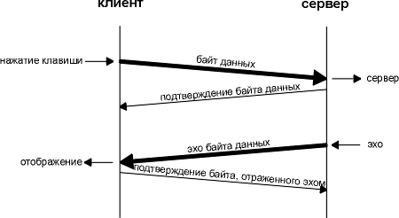
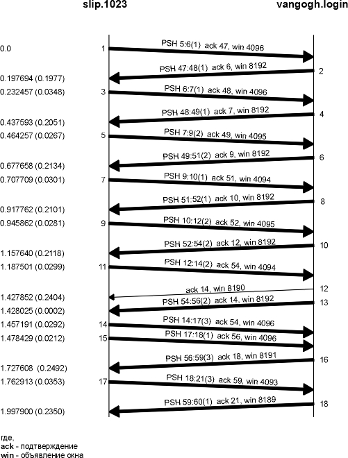
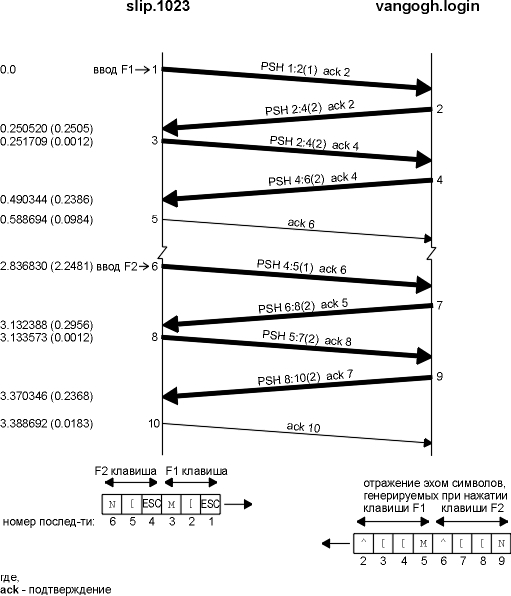
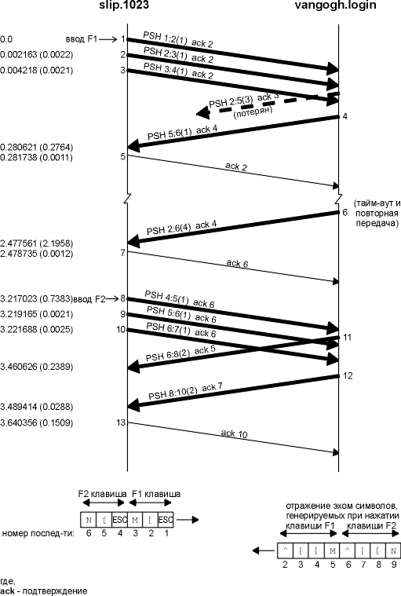

Глава 19 Интерактивный поток данных TCP
В предыдущей главе мы рассмотрели, как устанавливаются и разрываются TCP соединения. Теперь посмотрим, как с использованием TCP передаются данные.
Если проанализировать TCP траффик, как, например, это сделано в [Caceres et al. 1991], можно обнаружить, что примерно половина всех TCP сегментов составляет неинтерактивные данные (FTP, электронная почта, новости Usenet), а другая половина принадлежит интерактивным или диалоговым приложениям (Telnet и Rlogin, например). По количеству байт, примерно 90% составляют неинтерактивные данные, а 10% диалоговые данные. Cегменты, содержащие неинтерактивные данные, как правило, полного размера (512 байт пользовательских данных), тогда как интерактивные пакеты меньше. (Также было обнаружено, что 90% пакетов, используемых Telnet и Rlogin, содержат меньше чем 10 байт пользовательских данных.)
TCP способен обработать оба типа данных, однако при передаче разных типов данных используются разные алгоритмы. В этой главе мы рассмотрим передачу интерактивных (диалоговых) данных с использованием Rlogin. Мы посмотрим, как работают задержанные подтверждения и как алгоритм Нагла (Nagle) уменьшает количество маленьких пакетов, проходящих по глобальным сетям. Тот же алгоритм применяется и в Telnet. В следующей главе рассматривается передача неинтерактивных данных.
Давайте посмотрим, как осуществляется передача данных, при вводе интерактивной команды при Rlogin соединении. Большинство новичков в TCP/IP очень удивляются, когда обнаруживают, что каждое нажатие клавиши генерирует пакет данных. Другими словами, при нажатии клавиши от клиента серверу посылается 1 байт за один промежуток времени (а не строка за один раз). Более того, сервер Rlogin отражает эхом символы, которые введены клиентом. При этом генерируется 4 сегмента: (1) интерактивный ввод символа от клиента, (2) подтверждение получение символа от сервера, (3) эхо введенного символа от сервера и (4) подтверждение на эхо от клиента. На рисунке 19.1 показан обмен данными.

Рисунок 19.1 Один из возможных способов осуществить удаленное эхо введенного символа.
Обычно сегменты 2 и 3 объединяются - подтверждение введенного символа отправляется вместе с эхо. Мы опишем технику подобного комбинирования (которое называется задержанным подтверждением) в следующем разделе.
Rlogin не случайно выбран для иллюстрации примеров. Это приложение обычно посылает от клиента серверу по одному символу. При рассмотрении Telnet (глава 26), мы увидим, что там предусмотрена опция, которая позволяет отправить строку ввода от клиента серверу, что уменьшает загрузку сети.
На рисунке 19.2 показан поток данных, соответствующий вводу пяти символов date\n. (Мы не показали процесс установления соединения и удалили весь вывод, посвященный типу сервиса. BSD/386 устанавливает TOS для Rlogin соединения таким образом, минимизировать задержку.) В строке 1 от клиента серверу отправляется 1 символ (d). В строке 2 приходит подтверждение на этот символ и его эхо. (Два средних сегмента на рисунке 19.1 объединены.) В строке 3 подтверждается символ, отраженный эхом. Строки 4-6 соответствуют символу a, строки 7-9 соответствуют символу t, а строки 10-12 символу e. Секунды задержки между строками 3-4, 6-7, 9-10 и 12-13 вызваны "человеческим фактором" (скорость ввода символов пользователем).
Обратите внимание на отличие в строках 13-15. В данном случае от клиента серверу посылается один символ (Unix символ новой строки, который генерируется при нажатии клавиши RETURN), однако эхом возвращается два символа. Эти символы возврата каретки и пропуск строки (CR/LF), при этом курсор перемещается в крайне левую позицию следующей строки.
В строке 16 показан вывод команды date, запущенной на сервере. 30 байт соответствуют следующим 28 символам
Sat Feb 6 07:52:17 MST 1993
1 0.0
bsdi.1023
> svr4.login: P 0:1(1) ack 1 win 4096
2 0.016497 (0.0165) svr4.login > bsdi.1023: P 1:2(1) ack
1 win 4096
3 0.139955 (0.1235) bsdi.1023 > svr4.login: . ack 2 win
4096
4 0.458037 (0.3181) bsdi.1023 > svr4.login: P 1:2(1) ack
2 win 4096
5 0.474386 (0.0163) svr4.login > bsdi.1023: P 2:3(1) ack
2 win 4096
6 0.539943 (0.0656) bsdi.1023 > svr4.login: . ack 3 win
4096
7 0.814582 (0.2746) bsdi.1023 > svr4.login: P 2:3(1) ack
3 win 4096
8 0.831108 (0.0165) svr4.login > bsdi.1023: P 3:4(1) ack
3 win 4096
9 0.940112 (0.1090) bsdi.1023 > svr4.login: . ack 4 win
4096
10 1.191287 (0.2512) bsdi.1023 > svr4.login: P 3:4(1) ack
4 win 4096
11 1.207701 (0.0164) svr4.login > bsdi.1023: P 4:5(1) ack
4 win 4096
12 1.339994 (0.1323) bsdi.1023 > svr4.login: . ack 5 win
4096
13 1.680646 (0.3407) bsdi.1023 > svr4.login: P 4:5(1) ack
5 win 4096
14 1.697977 (0.0173) svr4.login > bsdi.1023: P 5:7(2) ack
5 win 4096
15 1.739974 (0.0420) bsdi.1023 > svr4.login: . ack 7 win
4096
16 1.799841 (0.0599) svr4.login > bsdi.1023: P 7:37(30)
ack 5 win 4096
17 1.940176 (0.1403) bsdi.1023 > svr4.login: . ack 37 win
4096
18 1.944338 (0.0042) svr4.login > bsdi.1023: P 37:44(7)
ack 5 win 4096
19 2.140110 (0.1958) bsdi.1023 > svr4.login: . ack 44 win
4096
Рисунок 19.2 Сегменты, генерируемые при вводе date в Rlogin соединение.
Следующие 7 байт, отправленные от сервера клиенту (строка 18), это приглашение, которое выглядит следующим образом: svr4 % . В строке 19 выдается подтверждение на эти 7 байт.
Обратите внимание на то, как в TCP генерируются подтверждения. В строке 1 отправляется байт данных с номером последовательности 0. В строке 2 приходит подтверждение с номером последовательности 1, то есть номер последовательности последнего успешно принятого байта плюс 1. (Это обычно называется номером последовательности следующего ожидаемого байта.) В строке 2 от сервера клиенту посылается байт данных с номером последовательности равным 1. Он подтверждается (ACK) клиентом в строке 3 путем отправки подтверждения с номером последовательности равным 2.
На рисунке 19.2 необходимо обратить внимание на времена, которые мы рассмотрим в этом разделе. На рисунке 19.3 показана временная диаграмма обмена, приведенного на рисунке 19.2. (Мы удалили из временной диаграммы все объявления окна и добавили выражения, которые указывают на то, какие данные передаются.)
Семь подтверждений ACK, отправленные от bsdi к svr4, помечены как задержанные ACK (delayed ACK). Обычно TCP не отправляет ACK сразу по приему данных. Вместо этого он осуществляет задержку подтверждений в надежде на то, что в этом же направлении будут отправлены данные, таким образом ACK может быть отправлено вместе с данными. Большинство реализаций используют задержку равную 200 миллисекунд - таким образом, TCP задерживает ACK на время до 200 миллисекунд, чтобы посмотреть, не направляются ли данные в том же направлении, что и ACK.

Рисунок 19.3 Временная диаграмма потока данных для команды date, введенной в соединение rlogin.
Если рассмотреть разницу во времени между приемом данных bsdi и отправкой ACK, то она будет выглядеть случайной: 123,5; 65,6; 109,0; 132,3; 42,0; 140,3 и 195,8 миллисекунды. Давайте посмотрим на реальные времена (начинающиеся с 0), когда отправляются ACK: 139,9; 539,9; 940,1; 1339,9; 1739,9; 1940,1 и 2140,1 миллисекунды. (Мы пометили эти значения звездочкой слева на рисунке 19.3.) Разница между этими временами составляет несколько периодов по 200 миллисекунд. Это происходит из-за того, что TCP имеет таймер, который выключается каждые 200 миллисекунд, однако он выключается в фиксированные моменты времени - каждые 200 миллисекунд с того момента, когда ядро было загружено. Так как данные, которые должны быть подтверждены, приходят со случайными задержками (во времена 16,4; 474,3; 831,1 и так далее), TCP должен быть уведомлен о том, когда истекает следующий 200-миллисекундный таймер ядра. Это может произойти в любой момент от 1 до 200 миллисекунд в будущем.
Если мы посмотрим, сколько времени требуется svr4 на то, чтобы сгенерировать эхо для каждого полученного символа, времена будут следующими: 16,5; 16,3; 16,5; 16,4 и 17,3 миллисекунды. Так как это время меньше чем 200 миллисекунд, мы никогда не увидим задержанный ACK на этой стороне. Всегда существуют данные готовые к отправке, перед тем как истечет таймер задержанного ACK. (Конечно, мы можем увидеть задержанный ACK, если период ожидания, около 16 миллисекунд, совпадет с одним из таймеров в 200 миллисекунд. Однако, этого не произошло в примере.)
Мы видели тот же самый сценарий на рисунке 18.7, в случае с 500-миллисекундным таймером TCP, используемым для определения тайм-аута. Оба TCP таймера, и 200-миллисекундный и 500-миллисекундный, начинают отсчет с того момента, когда ядро было загружено. Когда TCP устанавливает таймер, он может выключиться в любой момент между 1-200 или 1-500 миллисекунд в будущем.
Требования к хостам Host Requirements RFC указывают на то, что TCP должен применять задержанные ACK, однако задержка должна быть меньше чем 500 миллисекунд.
Алгоритм Нагла
В предыдущем разделе мы видели, что обычно от клиента к серверу через Rlogin соединение передается 1 байт за один раз. При этом генерируются пакеты размером 41 байт: 20 байт - IP заголовок, 20 байт - TCP заголовок и 1 байт данных. Маленькие пакеты (называемые тиниграммами, от английского tiny - крошечный, маленький) - обычно не проблема для локальных сетей, так как большинство локальных сетей не перегружаются, однако они могут привести к перегрузке глобальной сети. Простое и элегантное решение было предложено в RFC 896 [Nagle 1984], которое сейчас называется алгоритмом Нагла (Nagle algorithm).
Из алгоритма следует, что в TCP соединении может присутствовать только один исходящий маленький сегмент, который еще не был подтвержден. Следующие маленькие сегменты могут быть посланы только после того, как было получено подтверждение. Вместо того чтобы отправляться последовательно, маленькие порции данных накапливаются и отправляются одним TCP сегментом, когда прибывает подтверждение на первый пакет. Красота этого алгоритма заключается в том, что он сам настраивает временные характеристики: чем быстрее придет подтверждение, тем быстрее будут отправлены данные. В медленных глобальных сетях, где необходимо уменьшить количество маленьких пакетов, отправляется меньше сегментов. (В разделе "Синдром "глупого" окна" главы 22 мы увидим, что определение "маленький" означает - меньше чем размер сегмента.)
На рисунке 19.3 мы видели, что для Ethernet время возврата на один отправленый байт, на который приходит подтверждение и эхо, составляет примерно 16 миллисекунд. Чтобы данные генерировались быстрее, мы должны печатать больше чем 60 символов в секунду. Это означает, что вряд ли можно использовать этот алгоритм при отправке данных между двумя хостами, находящимися в локальной сети.
Однако, положение меняется, когда время возврата (RTT) увеличивается, обычно это происходит в глобальных сетях. Давайте рассмотрим Rlogin соединение между хостом slip и хостом vangogh.cs.berkeley.edu. Чтобы выйти из нашей сети (рисунок 1.11), необходимо пройти два SLIP канала, а потом попасть в Internet. В этом случае мы ожидаем довольно большое время возврата. На рисунке 19.4 показана временная диаграмма потока данных, которые соответствуют быстрому набору символов клиентом (предположим, что за клавиатурой хорошая стенографистка). (Мы удалили всю информацию, соответствующую типу сервиса, однако оставили объявления размера окна.)

Рисунок 19.4 Поток данных с использованием rlogin между slip и vangogh.cs.berkeley.edu.
Первое, на что необходимо обратить внимание, на рисунках 19.3 и 19.4, то, что нет задержанных ACK от slip к vangogh. Это происходит потому, что в данном случае данные всегда готовы к отправке, перед тем как истечет таймер задержанного ACK.
Необходимо обратить внимание на различные размеры данных, которые отправляются слева направо: 1, 1, 2, 1, 2, 2, 3, 1 и 3 байта. Это объясняется тем что, что клиент собирает данные, которые необходимо послать, однако не посылает их, пока на ранее отправленные данные не приходит подтверждение. С использованием алгоритма Нагла с помощью девяти сегментов (а не 16) было отправлено 16 байт. Обработка сегментов 14 и 15 противоречит алгоритму Нагла, необходимо посмотреть на номера последовательности, чтобы определить, что произошло в действительности. Сегмент 14 это отклик на ACK, полученный в сегменте 12, так как подтвержденный номер последовательности равен 54. Однако перед тем как этот сегмент данных отправлен клиентом, от сервера прибывает сегмент 13. Сегмент 15 содержит подтверждение (ACK) на сегмент 13, номер последовательности 56. Таким образом, клиент игнорировал алгоритм Нагла, так как мы видим два последовательных сегмента данных, посланных от клиента к серверу.
Также на рисунке 19.4 необходимо обратить внимание на то, что существует один задержанный ACK, передаваемый однако от сервера к клиенту (сегмент 12). Мы предположили, что это задержанный ACK, потому что он не содержит данных. Сервер скорее всего был занят в этот момент времени, поэтому сервер Rlogin не мог отправить эхо символ, перед тем как истек таймер задержанного ACK.
И в заключение, обратимся к размеру данных и номерам последовательности в последних двух сегментах. Клиент посылает 3 байта данных (с номерами 18, 19 и 20), затем сервер подтверждает эти 3 байта (ACK 21 в последнем сегменте), однако посылает назад только один байт (с номером 59). Здесь происходит следующее: TCP сервер подтверждает 3 байта данных за один раз, однако эхо этих 3-х байт не будет готово к отправке назад, пока их не сгенерирует сервер Rlogin. Это показывает на то, что TCP может подтвердить принятые данные, до того как приложение считало и обработало эти данные. TCP подтверждение просто означает, что TCP корректно получил данные. Определить, что процесс сервера не считал эти 3 байта данных можно благодаря тому, что объявленный размер окна в последнем сегменте равен 8189, а не 8192.
Существуют моменты, когда необходимо отключить алгоритм Нагла. Классический пример - сервер X Window System (глава 30, раздел "X Window System"): маленькие пакеты (соответствующие передвижению мыши) должны быть переданы без задержки, что обеспечивает отклик в реальном времени для пользователя.
Однако здесь мы продемонстрируем другой пример, который позволяет представить необходимость выключения алгоритма - ввод одной из специальных клавиш терминала во время интерактивного терминального захода. Функциональные клавиши обычно генерируют несколько байт данных, которые часто начинаются с escape ASCII символа. TCP клиент получит 1 байт данных (от приложения) за один момент времени, пошлет этот первый байт (ASCII ESC), а оставшиеся байты задержит до того момента, пока не придет подтверждение на первый отправленный байт. Однако, когда сервер получает этот первый байт, он не генерирует эхо пока не будут получены все оставшиеся байты. В этом случае, обычно, включается алгоритм задержанного ACK на сервере, а это означает, что оставшиеся байты не будут отправлены в течении ближайших 200 миллисекунд. В результате пользователь получит заметную задержку вывода.
Сокеты API используют опцию сокета TCP_NODELAY, чтобы выключить алгоритм Нагла.
Требования к хостам Host Requirementts RFC указывают, что TCP должен применять алгоритм Нагла, однако должен существовать способ для приложения выключить его для определенного соединения.
Пример
Мы можем пронаблюдать функционирование алгоритма Нагла при нажатии клавиши, которая генерирует несколько байт. Было установлено Rlogin соединение от хоста slip к хосту vangogh.cs.berkeley.edu. Затем мы нажали функциональную клавишу F1, которая генерирует 3 байта: escape, левую квадратную скобку и M. Затем мы ввели функциональную клавишу F2, которая генерирует еще 3 байта. На рисунке 19.5 показан вывод tcpdump. (Информация, соответствующая типу сервиса и определению окна, удалена.)
нажимаем
клавишу F1
1 0.0
slip.1023
> vangogh.login: P 1:2(1) ack 2
2 0.250520 (0.2505) vangogh.login > slip.1023: P 2:4(2)
ack 2
3 0.251709 (0.0012) slip.1023 > vangogh.login: P 2:4(2)
ack 4
4 0.490344 (0.2386) vangogh.login > slip.1023: P 4:6(2)
ack 4
5 0.588694 (0.0984) slip.1023 > vangogh.login: . ack 6
нажимаем
клавишу F2
6 2.836830 (2.2481) slip.1023 > vangogh.login: P 4:5(1)
ack 6
7 3.132388 (0.2956) vangogh.login > slip.1023: P 6:8(2)
ack 5
8 3.133573 (0.0012) slip.1023 > vangogh.login: P 5:7(2)
ack 8
9 3.370346 (0.2368) vangogh.login > slip.1023: P 8:10(2)
ack 7
10 3.388692 (0.0183) slip.1023 > vangogh.login: . ack 10
Рисунок 19.5 Работа алгоритма Нагла при вводе символов, которые генерируют несколько байт данных.
На рисунке 19.6 показана временная диаграмма соответствующая этому обмену. Внизу этого рисунка показано 6 байт, переданные от клиента к серверу с их номерами последовательности, и 8 байт, которые были возвращены эхом.
Когда первый байт ввода был прочитан клиентом rlogin и записан в TCP, он отправляется в сегменте 1. Это первый из 3 байт, сгенерированных при нажатии клавиши F1. Его эхо возвращено в сегменте 2, и только после этого отправляются следующие 2 байта (сегмент 3). Эхо для вторых 2 байт получено в сегменте 4, а подтверждение в сегменте 5.
Причина того, что эхо для первого байта заняло 2 байта (сегмент 2), заключается в том, что ASCII escape символ отражается эхом как 2 байта: символ "^" и левая квадратная скобка. Следующие 2 введенных байта, левая скобка и М, отражаются эхом как они есть.
Тот же самый обмен происходит, когда нажата следующая функциональная клавиша (сегменты 6-10). Как мы и ожидали, разница во времени между сегментами 5 и 10 (slip посылает подтверждение на эхо) это несколько периодов времени по 200 миллисекунд, так как оба подтверждения (ACK) задержаны.

Рисунок 19.6 Временная диаграмма для рисунка 19.5 (наблюдение за работой алгоритма Нагла).
Сейчас мы повторим тот же самый пример с использованием версии rlogin, которая модифицирована таким образом, что способна выключать алгоритм Нагла. На рисунке 19.7 показан вывод команды tcpdump. (Информация, посвященная типу сервиса и объявлению окна, удалена.)
нажимаем
клавишу F1
1 0.0
slip.1023
> vangogh.login: P 1:2(1) ack 2
2 0.002163 (0.0022) slip.1023 > vangogh.login: P 2:3(1)
ack 2
3 0.004218 (0.0021) slip.1023 > vangogh.login: P 3:4(1)
ack 2
4 0.280621 (0.2764) vangogh.login > slip.1023: P 5:6(1)
ack 4
5 0.281738 (0.0011) slip.1023 > vangogh.login: . ack 2
6 2.477561 (2.1958) vangogh.login > slip.1023: P 2:6(4)
ack 4
7 2.478735 (0.0012) slip.1023 > vangogh.login: . ack 6
нажимаем
клавишу F2
8 3.217023 (0.7383) slip.1023 > vangogh.login: P 4:5(1)
ack 6
9 3.219165 (0.0021) slip.1023 > vangogh.login: P 5:6(1)
ack 6
10 3.221688 (0.0025) slip.1023 > vangogh.login: P 6:7(1)
ack 6
11 3.460626 (0.2389) vangogh.login > slip.1023: P 6:8(2)
ack 5
12 3.489414 (0.0288) vangogh.login > slip.1023: P 8:10(2)
ack 7
13 3.640356 (0.1509) slip.1023 > vangogh.login: . ack 10
Рисунок 19.7 Отключение алгоритма Нагла в течении Rlogin сессии.
Будет более поучительно и информативно получить этот вывод и построить временную диаграмму, зная какие пакеты прошли по сети. Также этот пример требует внимательного изучения номеров последовательности, которые соответствуют текущим данным. Это показано на рисунке 19.8. Нумерация сегментов соответствует нумерации в выводе tcpdump, приведенном на рисунке 19.7.
Первое отличие, которое бросается в глаза, заключается в том, что все 3 байта отправляются, когда они готовы (сегменты 1, 2 и 3). Задержка не осуществляется - алгоритм Нагла выключен.
Следующий пакет, который мы видим в выводе tcpdump (сегмент 4), содержит 5 байт от сервера с ACK 4. Здесь произошла ошибка. Клиент немедленно отвечает с ACK 2 (незадержанный), а не ACK 6, так как он не ожидал прихода байта номер 5. Это означает, что сегмент данных был потерян. Это показано пунктирными линиями на рисунке 19.8.
Как мы узнали, что этот потерянный сегмент содержит байты 2, 3 и 4 вместе с ACK 3? Следующий байт, который мы ожидаем, это байт номер 2, как объявлено в сегменте номер 5. (Когда TCP получает данные в неправильном порядке, то есть с номерами последовательности, следующими за теми, которые мы ожидаем, он обычно отвечает подтверждением, содержащим номер последовательности следующего байта, который он ожидает получить.) Так как отсутствующий сегмент содержал байты 2, 3 и 4, это означает, что сервер должен получить сегмент 2, таким образом, отсутствующий сегмент должен быть указан как ACK 3 (номер последовательности следующего байта, который ожидается сервером к приему). И в завершение, обратите внимание на то, что при повторной передаче, сегмент 6, содержит данные из отсутствующего сегмента и сегмента 4. Это называется пересборкой пакетов (repacketization) , что мы обсудим более подробно в разделе "Пересборка пакетов" главы 21.
Возвращаясь к обсуждению выключения алгоритма Нагла, мы можем увидеть, что 3 байта, соответствующие следующей специальной клавише, которую мы нажали, отправляются как три отдельных сегмента (8, 9 и 10). Теперь сервер отражает эхом байт в сегменте 8 - первым (сегмент 11), а затем отражает эхом байты из сегментов 9 и 10 (сегмент 12).
В этом примере мы увидели, что использование по умолчанию алгоритма Нагла может вызвать дополнительные задержки при нажатии нескольких клавиш в процессе работы интерактивных приложений по глобальным сетям.
Мы вернемся к этой теме в главе 21, которая посвящена тайм-аутам и повторным передачам.

Рисунок 19.8 Временная диаграмма для рисунка 19.7 (выключение алгоритма Нагла).
На рисунке 19.4 мы видели, что slip объявляет окно размером 4096 байт, а vangogh объявляет окно 8192 байта. Большинство сегментов на этом рисунке содержат одно из этих двух значений.
Сегмент 5, однако, объявляет окно размером 4095 байт. Это означает, что в TCP буфере все еще находится 1 байт, не считанный приложением (клиент Rlogin). Следующий сегмент от клиента объявляет окно равное 4094 байта, а это означает, что 2 байта все еще должны быть считаны приложением.
Сервер обычно объявляет окно равное 8192 байтам, потому что TCP серверу нечего послать до тех пор, пока сервер Rlogin читает и принимает данные, а затем отражает их эхом. Данные от сервера посылаются после того, как сервер Rlogin считал ввод от клиента.
TCP клиент, с другой стороны, часто имеет данные, которые необходимо послать, когда прибудет подтверждение, поэтому он помещает символы в буфер, ожидая прихода ACK. Когда TCP клиент посылает буферизированные данные, Rlogin клиент не имеет возможности прочитать данные, полученные от сервера, поэтому клиент объявляет окно меньше чем 4096.
Диалоговые данные обычно передаются в сегментах с размером меньшим, чем максимальный размер сегмента. В случае Rlogin от клиента к серверу обычно передается один байт данных. Telnet позволяет посылать за один раз строку, однако большинство реализаций на сегодняшний день до сих пор посылают по одному символу.
Задержанное подтверждение используется принимающей стороной этих маленьких пакетов, для того чтобы послать подтверждение вместе с данными, которые возвращаются к отправителю. Это, как правило, уменьшает количество сегментов, особенно в случае сессии Rlogin, где сервер отражает эхом все символы, напечатанные клиентом.
При работе в медленных глобальных сетях часто используется алгоритм Нагла, что позволяет уменьшить количество маленьких сегментов. В случае использования алгоритма Нагла отправляется только один маленький неподтвержденный пакет в один момент времени. Однако существуют моменты, когда алгоритм Нагла должен быть отключен, как мы показали в примерах.